ANASAYFA home
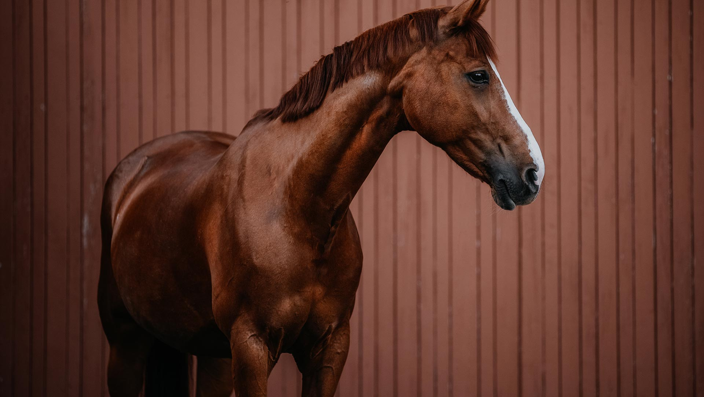
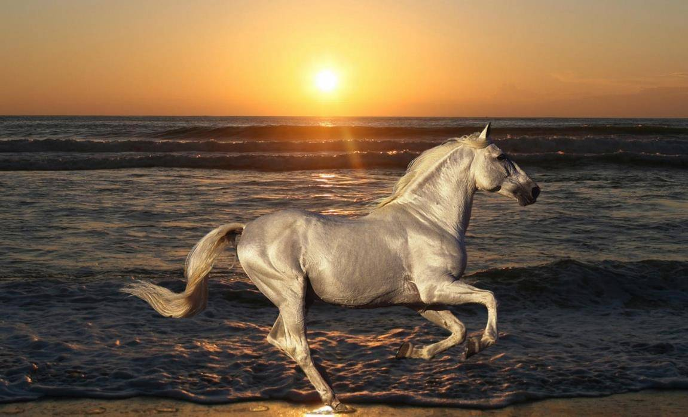


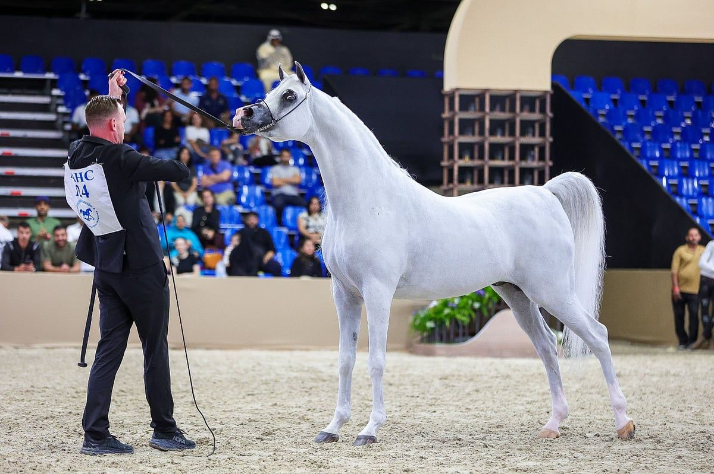
Zekası, sadakati ve insanlarla kurduğu güçlü bağ ile bilinir. Dayanıklılık yarışlarının rakipsiz şampiyonudur.
 Atı.jpg )
Çok zeki, öğrenmeye istekli, nazik ve insan canlısı bir doğaları vardır.
.jpg)
Özgürlüklerine aşırı düşkündürler. Bu yüzden "ehlileştirilmeleri" diğer atlara göre çok daha zordur ve sabır gerektirir.
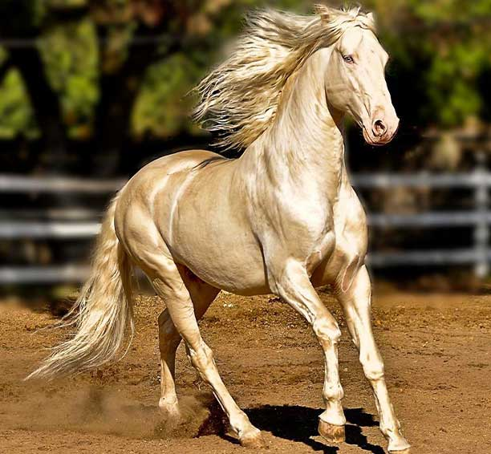
Çöl iklimine uyum sağladıkları için çok az su ve gıda ile çok uzun mesafeler katedebilirler. Bu özellikleri onları dünya çapındaki uzun mesafe yarışlarının favorisi yapar.
.jpg)
Olağanüstü sakin, sabırlı ve "insan canlısı" karakterleri sayesinde, engelli bireylerin fiziksel ve ruhsal tedavisinde kullanılan en iyi terapi atlarından biri kabul edilirler.
.jpg)
Çok uyumlu ve zeki olan bu atlar, Kuzey Amerika yerlileri (Kızılderililer) tarafından "savaş boyalı" görünümleri nedeniyle manevi bir değer atfedilerek yetiştirilmiştir.
.jpg)
Tarihsel olarak kömür madenlerinde, tarım tarlalarında ve ağır vagonların çekilmesinde ana güç kaynağı olarak kullanılmışlardır.
Çöl iklimine uyum sağladıkları için çok az su ve gıda ile çok uzun mesafeler katedebilirler. Bu özellikleri onları dünya çapındaki uzun mesafe yarışlarının favorisi yapar.
.jpg)
Bu atların ataları, buz çağından beri İber Yarımadası'nda yaşayan yerli atlardır. Roma döneminde savaşlarda sergiledikleri hız ve çeviklik sayesinde ün kazanmışlardır
.jpg)
Atlar az az ama sık beslenmelidir. Temel gıdaları kaliteli kuru ot (yonca vb.) ve yulaftır.
At Besleme Görseli
.jpg)
Atın derisindeki tozun atılması ve kan dolaşımının hızlanması için hayati önem taşır. Önce sert kaşağı ile kaba kirler alınır, sonra yumuşak fırça ile parlatılır.
At Tımarı Görseli
.jpg)
Atın "ikinci kalbi" tırnaklarıdır. Tırnak kancası yardımıyla tabanda biriken taş, çamur ve gübre temizlenmelidir.
Tırnak Temizleme Görseli

Atın yaşadığı alan (boks) her gün temizlenmeli, ıslak altlıklar (talaş/saman) değiştirilmelidir.
Ahır Temizliği Görseli
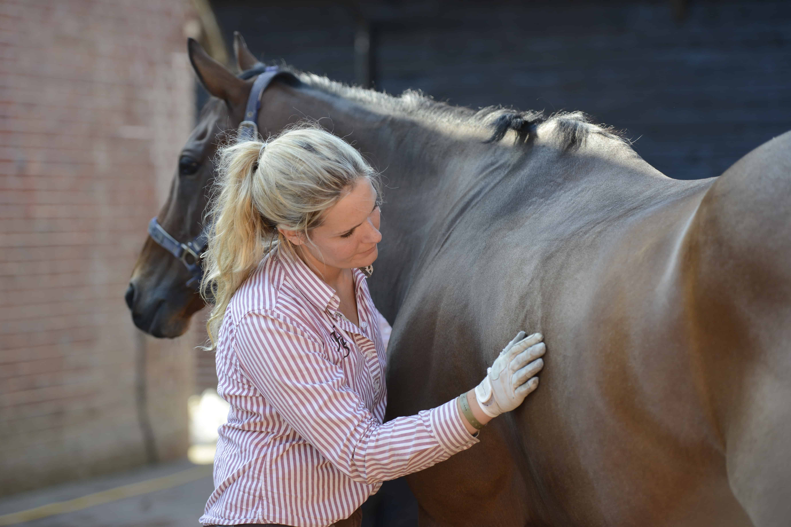
Atın normalin varlığının, bir sorunun olup olmadığının anlaşılmasının ilk adımıdır.
 Müdahalesi.jpg)
Atın huzursuzca yere yatıp yuvarlanması, karnına bakması veya tekmelemesi kolik belirtisidir.

Bacak yaralanmalarında enfeksiyonu önlemek ve kanamayı durdurmak için doğru bandajlama kritiktir

1. Beslenmenin Temeli: Kaba Yem (Ot ve Yonca)
Atların diyetinin en az %60-70'i kaliteli kuru ot veya meradan oluşması gerekir. Bu, toplanmış mide asitlerinin ilişkilerine yardımcı olur ve vücuttan ayrılanların kötü dağılması (çiğneme gibi) engeller.
Genel bakım için ideal bir kaba yemdir.
Protein ve ihtiyacı yüksek olan büyüyen taylar veya çalışan atlar için tercih edilir.
2. Yoğun (Konsantre) Yemler ve Tahıllar
Sadece kaba yemle enerji ihtiyaçları karşılanamayan performans atları için eklenir.
Atlar için en güvenlidir, kolay sindirilir.
Enerji yoğunluğunun yüksek ancak sindirim sorunlarına yol açmaması için sınırlandırılması.
3. Su ve Mineraller
Atların günde ortalama 20-50 litre taze ve temiz suya erişimi olmalıdır. Ayrıca mineral eksikliklerini gidermek için barınaklarında her zaman bir yalama taşı (tuz tükenir) bulunmalıdır.
Beslenmede Altın Kurallar:
Atın mide kapasitesi değişir, bu nedenle günlük rasyon en az 3-4 öğüne bölünmemelidir.
Yeni bir yeme veya meraya geçişte sindirim şokunu (kolik) önlemek için en az 7-10 gün süreli eski yemle karıştırılarak geçiş yapılmalıdır.
Tozlu veya küflü yemler solunum ve sindirime uğramak (öksürük, sancı) neden olur.
.jpg)
1. Sancı (Kolik)
Atlar kuşamadıkları için mide ve ihracat problemleri hayati risk taşıyor. En yaygın ölüm nedenlerinden biridir.
Karnına bakma, sürekli yatıp kalkma, eşlenme ve iştahsızlık.
Atın huzursuzca yerde yuvarlanmaya çalışması veya yatma "köpek oturuşu" pozisyonları görünmektedir .
.jpg)
2. Ruam (Malleus)
Özellikle tek tırnaklı özellikleri, son derece zayıflıkları ve basınç değişimlerinin bir belirtisidir. İnsanlara da bulaşabildiği için (zoonoz) büyük önem taşır.
Burun deliklerinden gelen kanlı/irinli akıntı, akciğerlerde nodüller ve deri üzerinde yaralar ve tırnakta vb. etkiler bulunabilir .
.jpg)
3. Arpalama (Laminitis)
Tırnağın içindeki hassas dokuların salgılanmasıdır. Aşırı karbonhidrat tüketimi (fazla dönemde) veya sert zeminde fazla çalışma sonucu oluşur.
At, ön ayaklarındaki ağrıyı hafifletmek için arka ayaklarına yüklenerek "kaykaycı" gibi doğru ileri uzanır. Tırnaklar dokunulduğunda sıcaktır.

4. Solunum Yolu Hastalıkları (Heves/RAO)
Tozlu yemler veya yetersiz havalandırma atlarda kronik öksürüğe ve solunum güçlüğüne neden olabilir.
Egzersiz sırasında çabuk yorulma, burun akıntısı ve karın kaslarının nefesleri boyunca aşırı belirginleşmesi ("kanama çizgisi").
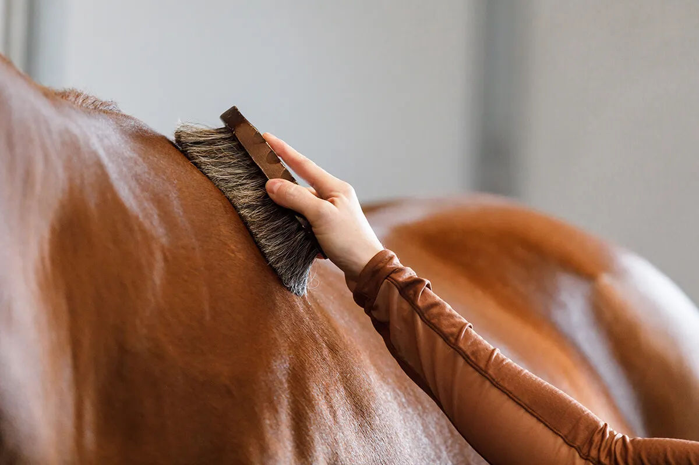
Temel binicilik eğitimi, atla güvenli bir bağ kurmaktan başlayıp doğru oturuş ve sevk tekniklerine kadar süren disiplinli bir şekilde söylendi
Atın sol ön omzuna doğru, seslenerek ve sakin adımlarla yaklaşılır.
Kaşağı, toz kurutma ve tırnak kancası en temel araçlardır.
Binicilik sadece ata binmek değil, aynı zamanda onun bakımını da üstlenmektedir. Atın temizlenmesi (tımar), gözün vurulacağı bölgedeki kirlerin temizlenerek rahatsız edilmesi engellenir.
Derideki kurumuş çamurları çıkar.
Tozları temizler ve tüyleri parlatır.
Tırnak aralarına kaçan taş ve pislikleri temizler.

Binicilikte eller, ayaklar ve vücut ağırlığı atla iletişim kurmanın temel araçlarıdır.
Baş, omuz, kalça ve topuk düz bir şapka üzerinde olmalıdır.
Dizginler birer iletişim hattı olarak görülmeli, asla ata tutunmak için çekilmemelidir.
Atın kulaklarının arasından her zaman yararlanmak, gitmek istediğiniz yöne bakmalısınız.

Eğitim, üç yürüyüş temposu üzerinde yoğunlaşır:
Dört zamanlı, yavaş ve doğal bir yürüyüştür.
İki zamanlı bir tempodur; binici eyerde hafifçe yükselip alçalarak (paylı süratli) ritmine uyum sağlar.
Üç zamanlı, daha hızlı ve ritmik bir koşu türüdür.

Eğitim sırasında mutlaka kask (tog) ve uygun binicilik botu (chaps veya çizme) kullanın. Ayrıca atların ağırlığı taşıma kapasitesi nedeniyle genellikle 93 kg üzerindeki kişilerin binmesi sağlık açısından önerilmez.

İşte dresajın temel unsurları:
1. Dresaj Arenası ve Harfler
Dresaj çalışmaları belirli ölçülerdeki (metre) bir sahada yapılır. Sahanın kenarlarındaki harfler , binicinin hangi manevrayı nerede uyguladığını gösteren referans noktalardır.
Terbiyesi'nde (Dresaj) , atın doğal hareketlerini mükemmelleştirmeyi, takılmasıni ve binicisiyle olan uyumunu en üst seviyede tutmanın bir biniciliğidir. Program "atın balesi" olarak sunulan bu spor, binicinin en hafif komutlarına yönlendirilir ve takipkar bir şekilde cevap verme esasına dayanır.
2. Temel Yürüyüş Biçimleri ve Topluluk (Koleksiyon)
Dresajda doğal yürüyüşleri olan adeta , tırıs ve dörtnal geliştirilir. "Topluluk" (Collection), ağırlık merkezini arka ayaklarına kaydırarak ön kısmı hafifletmesi ve daha düzenli, yaylanan adımlar atmasıdır.
3. İleri Seviye Hareketler (Yüksek Okul)
Eğitimin ilerleyen aşamalarında, sadece belirgin karmaşık hareketler sergiler:
Atın olduğu yerde, oldukça ritmik bir şekilde tırıs yapılıyor.
Tırısın çok daha yaylanan, havada kalma süresi uzun olan formüldür.
Atın arka ayaklar çevresinde olduğu yerde döngüdür.
Dörtnalda ayak değiştirerek yön değiştirmedir.
4. Bininin Oturuşu ve Yardımlar
Dresaj binicisi, eyerde dik ve dengeli bir şekilde oturuyor. Atlas iletişim; dizginler, dolgular ve vücut ağırlıklarıyla (yardımlar) kurulur. Amaç, bu kumandaların seyirci tarafından fark edilemeyecek kadar hafif olmasıdır.
Dresajın en üst seviyedeki Serbest Stil (Kür) yarışmalarında ve binici, bu zorlu hareket hareketleri bir müzik eşliğinde koreografi olarak sergiler.
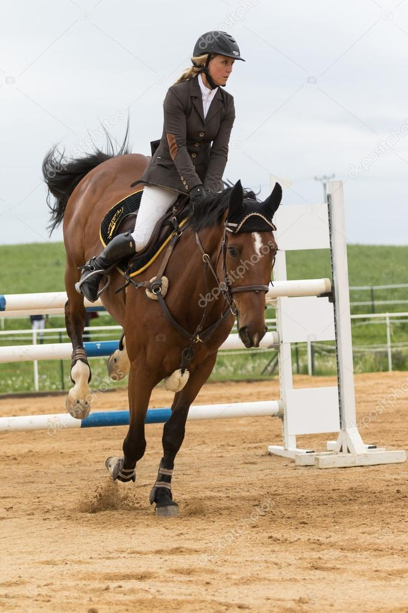
Engel Atlama (Engel Atlama), binici ve atın belirli bir süre içinde, parkur üzerindeki engelleri hata yapmadan ve en hızlı şekilde aşmayı başarmayı başaran popüler bir binicilik disiplinidir. Bu branşta dinamiklik, hız ve teknik hassasiyet ön plandır.
İşte engel atlamanın temel unsurları:
1. Atlayışın uykuları
Bir engel geçilirken ve binici beş temel aşamadan geçilir:
Atın engelden önceki son adımlar; tempo ve denge kısıtlanır.
Atın arka ayaklarıyla yerden güç alıp havalanması.
Atın engelin üzerinde havada asılı kaldığı an.
Önce ön ayaklar üzerine yere temas etmesi.
Bir sonraki engele hazırlık için dengenin tekrar kurulması.

2. Binicinin pozisyonu
Atılım sırasında binicinin en önemli görevi, aralıklarını bozmamak ve onun hareketlerine uyumu sağlamak:
Binici kalçasını eyerden hafifçe kaldırır ve ağırlığını üzengilere vererek öne eğilir.
Atın uzunluğunu uzatmak için binici ellerini atın yelesine doğru uzatır ("bırakma").
Binici her zaman bir sonraki engele veya varış noktasına doğru ileri bakar.
3. Engel Türleri
Yarışmalarda farklı sıcaklık seviyelerinde çeşitli engel türleri kullanılır:
Sadece aralıkları içeren, dikey çubuklardan oluşan engeldir.
Hem yükseklik hem de genişlik içeren iki dikey sıradan oluşan engeldir.
aralıklarda çok az mesafe bulunan, birbirini takip eden iki veya üç engelden oluşan dizilerdir.

4. Puanlama ve Hatalar
Engel atlamada amaç en az hata ödülüyle (ceza) parkuru bitirmektir. Cezanın verildiği durumlar:
Atın ayaklarının engele çarpıp çubuklarını düşürmesi.
Atın engelin önünde olanların veya yanından kaçması.
Parkurun kaydedildiği süreden daha uzun sürede bitirilmesi.
Daha fazla ayrıntı için Türkiye Binicilik Federasyonu veya Binicilik Okulu'nun kaynaklarını inceleyebilirsiniz.
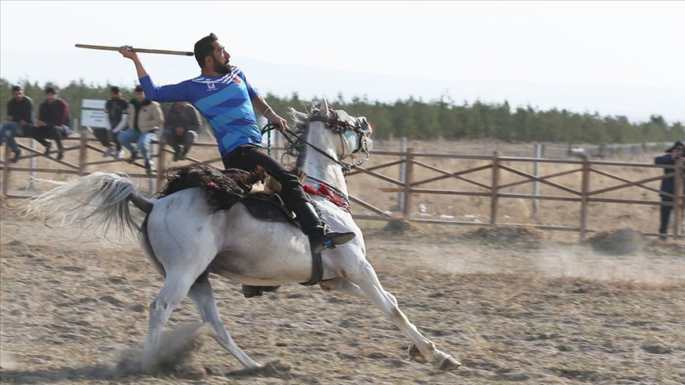
Rahvan binicilik,bölümlerde gelen veya sonradan öğretilen özel bir yürüyüş tarzını sergilediği, "atın en konforlu hali" olarak bilinen geleneksel bir spor dalıdır. Diğer atlı sporlar hız ve hedefe odaklanırken, rahvan binicilikte ana odaklılıksız hız ve stildir .
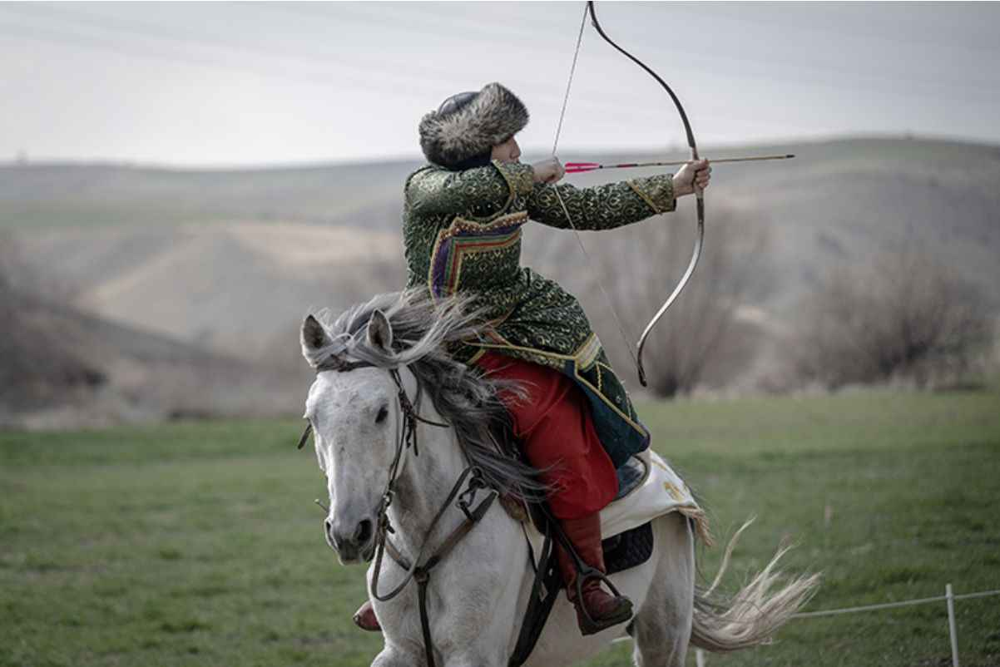
Hareket halindeki bir fırlatma, veya serbestken hedefe ok atma sanatıdır. 100 metrelik parkurlarda, ayakta veya hareketli hedeflere karşı icra edilir.

Atın, binicisini sarsmadan ve hızlı şekilde gitmesini sağlayan özel bir yürüyüş tekniğine (rahvan) dayalı yarış türüdür.
.webp)
KökbörüGökbörü (veya binicilik), genellikle "ataların sporu" olarak adlandırılır ve belki de tüm geleneksel Türk at sporları arasında fiziksel olarak en zorlu ve stratejik olanıdır. Orta Asya göçebe yaşamından kaynaklanan bu spor, sürülerin kurtlardan korunmasını simüle eder ve binicinin gücünün ve atın cesaretinin gerçek bir sınavıdır.
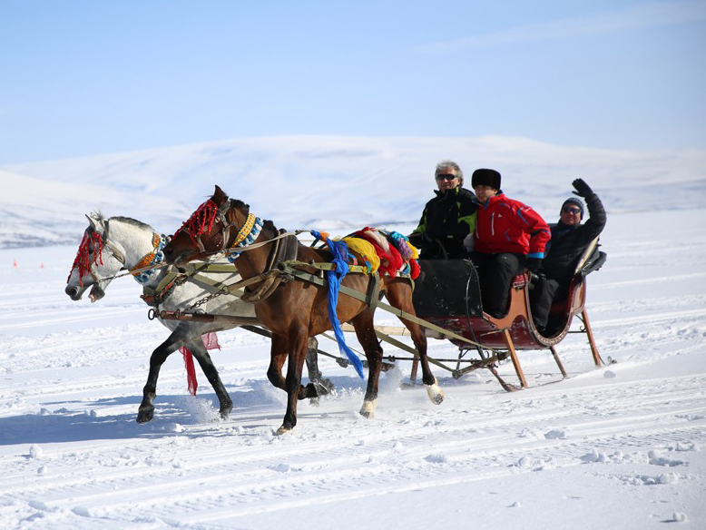
Atlı kızak, özellikle Doğu Anadolu'da, sadece bir spor olmaktan öte; hayatta kalma gerekliliğinden rekabetçi bir kültürel mirasa dönüşmüş, kış yaşamının hayati bir parçasıdır.
2.jpg)
ÇevgenGenellikle modern polonun atası olarak anılan atlı sporu, Türk tarihinin en eski takım sporlarından biridir. Günümüzde soylular ve seçkin kulüplerle ilişkilendirilse de, kökeni Orta Asya göçebe savaşçılarının at binme ve koordinasyon becerilerini geliştirmek için yapılan bir askeri eğitim tatbikatına dayanmaktadır.
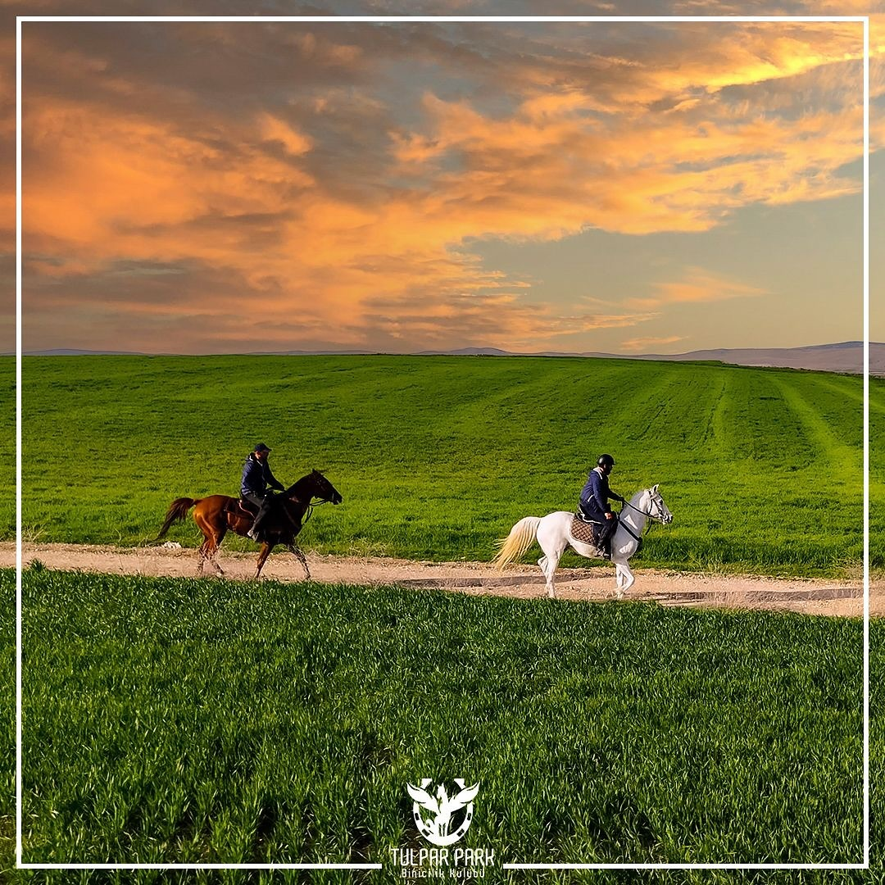
location_on Eskişehir/Tepebaşı
public Türkiye’de binicilik ve at kültürüne ilgi duyan bir platform
Bu site, atlar hakkında bilgileri paylaşmak için oluşturulmuştur.
At ırkları, bakım, beslenme ve binicilik hakkında faydalı bilgiler sunarak herkes için yararlı bir kaynak oluşturmayı hedeflenmektedir.
Binicilik sadece bir spor değil, doğayla uyum içinde olmayı öğreten özel bir yaşam tarzıdır.
At sevgisini yaymak, yeni başlayanlara rehber olmak ve bu tutkuyu daha fazla kişiye ulaştırmak.